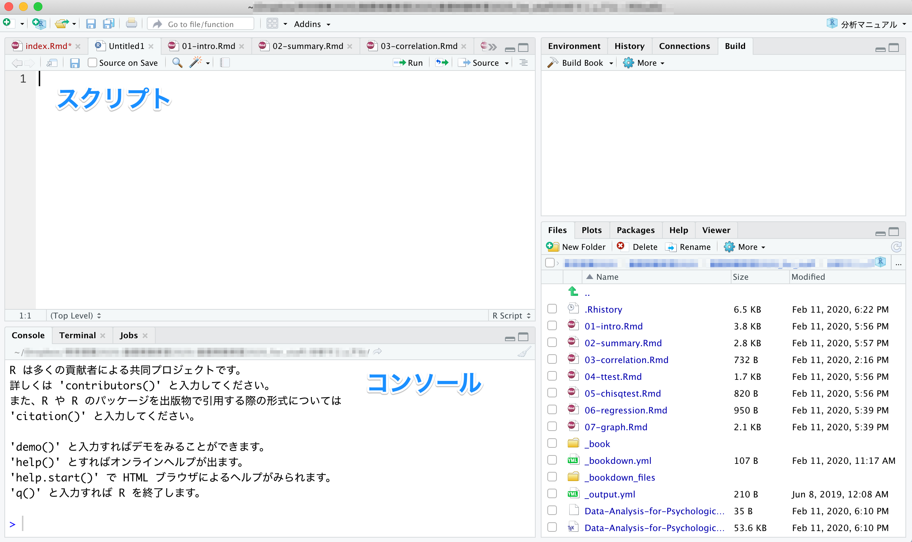
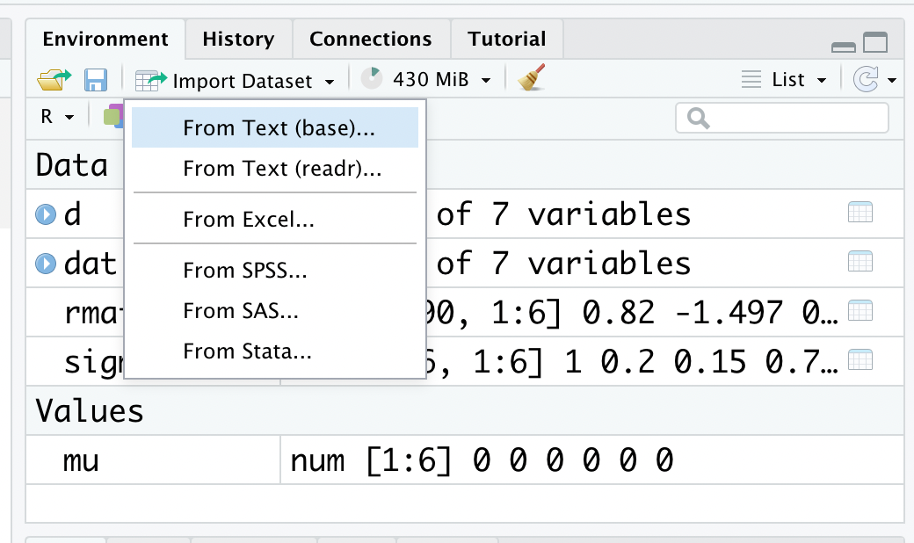
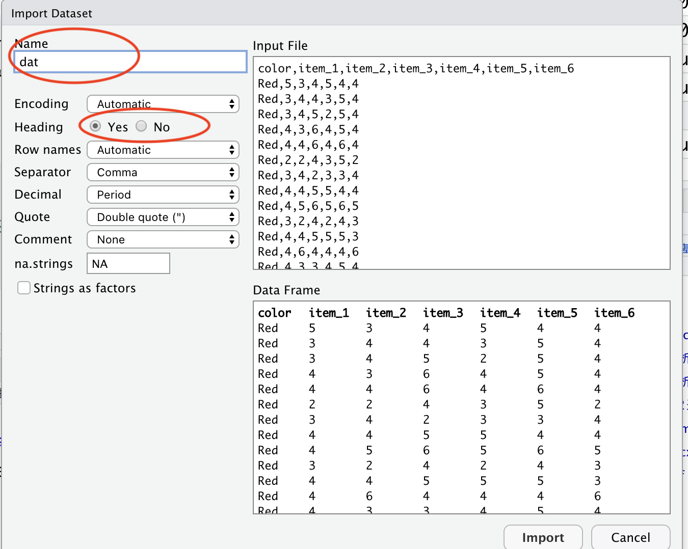

Chapter 2 Rの使い方
R のインストールから使い方までを解説する。
R 及び RStudio のインストール
（このテキストの手順でうまくいかない場合は、「R インストール」などでWeb検索してみよう）プログラムの書き方
変数
データ構造
欠損値の扱い
パッケージ
データの読み込み

2.2 RStudioのインストール
RStudio とは、R の使いやすさを向上させる目的で開発されているアプリケーションである。R をインストールしたら、RStudio もインストールしておくこともすすめる。このテキストでも、RStudio を使って解析することを前提に説明する。
インストールは、RStudioのWebページからできる。
R と Rstudio の両方をインストールできたら、RStudio の方を開く。
以下のような画面が表示される。

注意:
ここまでの手順で「R もしくは RStudio をインストールできない」あるいは「R 及び RStudio はインストールできたが、起動できない」という人は、以下の可能性を考えてみてほしい。
OS が Windows の場合、管理者権限のあるアカウントで R 及び RStudio をインストールする必要がある。インストールする際は、管理者権限として実行しよう。
同じく OS が Windows の場合、アカウント名にマルチバイト文字（全角文字）を含んでいると R が正常に起動しない。例えば、マシンにログインする時の名前を「ほげ」など全角文字（日本語）にしてしまっていると、うまくいかない。この場合は面倒ではあるが、「既にあるアカウントの名前を半角英数に変更する（hoge など）」、あるいは「もう一つ別の半角のアカウントを作る」といった方法で対処してみよう。
R に限らず、ファイルやフォルダ名に全角文字が含まれていると障害になる場合がある。ファイル名やフォルダ名には、なるべく日本語（全角文字）は使わない習慣を身に着けよう。
2.3 プログラムの書き方
Rの画面構成について確認する。
2.3.1 コンソール（Console）
コンソール（Console）という部分にプログラムを入力すると、結果が出力される。
ためしに、コンソールの>の部分に、以下のプログラムを入力して、Enter を押してみよう。
- このテキストでは以下のように、背景が灰色の箇所にプログラムとその出力結果（行頭に##が付いている部分）が示されている。
## [1] 2同じコンソールに、答えである2が出力されたはずである。 このように、コンソールに直接プログラムを入力すると、結果を返してくれる。
2.3.2 スクリプト
コンソールに入力したプログラムや出力結果は、R を閉じると消えてしまう。これでは復習できないので、プログラムは別のファイルに残しておいた方が良い。
プログラムを書き込んだテキストのことを「スクリプト」と呼ぶ。プログラムはなるべく、スクリプトに残しておく習慣をつけよう。
- 「File」から「New Script」を選ぶ。何も書かれていないファイル（R Editor）が開かれる。
- 名前をつけて保存する。「File」から「Save as..」を選び、名前をつけて保存する。拡張子が「.R」のファイルとして保存される。

スクリプトに、試しに以下のプログラムを入力してみよう。
プログラムを選択し、Ctrl と Enter を同時に押して実行する（「Run line or selection」を選んでも可）。すると、「R Console」にプログラムの結果が出力される。

スクリプトファイルを開きたいときは、RStudio を立ち上げて、「File」から「Open File」を選び、スクリプトのファイルを選ぶ。
初心者が戸惑いやすい点について説明する。
ためしに、コンソールに以下のプログラムを入力してEnterを押してみよう。

何も表示されないし、冒頭が>ではなく+が表示される。Enter を押しても元に戻らない。
プログラムが不完全なことが原因である。1 +と中途半端な状態で入力したので、Rはプログラムの続きがあるものと思って入力を待っている状態にある。プログラムの続きを入力すれば、結果が出力される。例えばこの例ならば、1を入力してEnterを押せば、答えである2が出力される。
他にもカッコの閉じ忘れなどでも、同じようなことが生じる。
なお、Esc（エスケープ）キーを押せば、プログラムを中止することができる。困ったときには、Escキーを押そう。
他にも、エラーが生じた場合は、エラーメッセージを読んで、プログラムの書き方に間違いがないかを確認しよう。たいてい、入力間違いなど大したことのないミスが原因である。ちょっとプログラムを間違えたくらいでRが壊れるということは決してないので、冷静に対処しよう。
2.5 変数
数値を変数に代入して扱うことができる。
## [1] 13## [1] 11なお、=の代わりに<-を使っても良い。
## [1] 132.5.1 変数の使い方の注意
Rは小文字と大文字を区別する。たとえば、a（小文字）と入力して実行すると結果が出力されるが、A（大文字）では出力されない。
また、数値を全角で入力していないかにも注意すること。全角文字は数値ではなく、文字として認識される。数値は常に半角で入力すること。
2.5.2 変数の型
R では変数の種類として、数値型、文字列、日付、論理型の区別をする。
数値型(numeric)
数値型として格納した変数は、数値として扱うことができる。数値型の変数同士で、演算（足し算・引き算・掛け算・割り算）を行うことができる。
## [1] "numeric"## [1] "numeric"## [1] 6.2文字列(character)
文字として扱われる。文字列同士は演算をすることができない。
文字を変数として代入したい場合は、文字をクオテーションマーク""で囲む。
## [1] "character"## [1] "character"日付(date)
Date型は日付のみを保存し、POSIXct型は日付と時間を保存する。 日付型同士で日数や秒数などの演算をすることができる。
## [1] "Date"## [1] "POSIXct" "POSIXt"## Time difference of 1 days2.6 データ構造
複数の数値などをまとめたものをデータと呼ぶ。R には、データを扱うための形式がいくつか用意されている。
2.6.1 ベクトル
同じ型の要素を集めたもの。R では、c()関数でベクトルを作成することができる。
## [1] 1 2 3 4 5## [1] "a" "b" "c" "d" "e"ベクトル[x]の表記でカッコの中に数値を入れると、そのベクトルの x 番目の要素を取り出せる。
## [1] 2## [1] "c"カッコの中に条件式を入れると、その条件に当てはまる部分を取り出せる。
## [1] 3 4 5## [1] "c"## [1] "a" "b" "d" "e"ベクトルが数値で構成されている場合は、演算をすることもできる。
## [1] 2 4 6 8 10## [1] 7 9 11 13 152.6.2 データフレーム
複数のベクトルを行列でまとめたデータ構造を、R ではデータフレームと呼ぶ。データフレームは頻繁に使うので、構造を覚えよう。
まず、2つのベクトルを作成する。
次に、以下のプログラムを実行して、データフレームを作る。data.frame()は、データフレームを作るための関数である。
以下では、ベクトルx_vecとy_vecをそれぞれ、xとyという名前にしてdatという名前の行列データを作成している。
## x y
## 1 1 a
## 2 2 b
## 3 3 c
## 4 4 d
## 5 5 e2.6.2.1 変数の扱い
以下のように、データフレーム$変数名で、データフレームの変数をベクトルとして取り出すができる。
## [1] 1 2 3 4 5データフレームに新たに変数を加えることも出来る。
## x y x_2
## 1 1 a 6
## 2 2 b 7
## 3 3 c 8
## 4 4 d 9
## 5 5 e 10## x y x_2 x_3
## 1 1 a 6 7
## 2 2 b 7 9
## 3 3 c 8 11
## 4 4 d 9 13
## 5 5 e 10 15データフレーム$変数名でデータ内の変数にアクセスする方法は、今後もよく使うので覚えておこう。
2.6.2.2 データの抽出
データフレーム[行数,列数]のかたちで指定することで、データフレームの行列を取り出すことができる。
## [1] "a"## x y x_2 x_3
## 1 1 a 6 7## [1] 1 2 3 4 5## x y x_2 x_3
## 1 1 a 6 7
## 2 2 b 7 9
## 3 3 c 8 11## x y x_2 x_3
## 1 1 a 6 7
## 3 3 c 8 11
## 5 5 e 10 15カッコ内に条件式を入れると、その条件と一致する部分を取り出せる。
## x y x_2 x_3
## 3 3 c 8 11
## 4 4 d 9 13
## 5 5 e 10 15## x y x_2 x_3
## 4 4 d 9 13
## 5 5 e 10 152.7 欠損値
心理学ならば一部の質問への無回答など、データが取得できなかったケースも生じ得る。そのような場合には、データの一部を欠損値として扱う。
Rでは、欠損値はNAで扱う。
先程の例で作ったデータフレームdatに、欠損値を含むベクトルx_4を入れてみよう。
## x y x_2 x_3 x_4
## 1 1 a 6 7 1
## 2 2 b 7 9 2
## 3 3 c 8 11 NA
## 4 4 d 9 13 4
## 5 5 e 10 15 5## [1] 2 4 NA 8 10欠損値を含むベクトルは、計算に用いることができない。例えば、R には平均値を計算するためのmean()という関数がある。しかし、欠損値を含むベクトルの場合は結果が出力されない。
## [1] NA関数によっては、欠損値を含むデータを使うときには欠損値の処理を指定する必要がある。例えば、mean()ならば、オプションとしてna.rm =TRUEを入れると欠損値を除いた上で平均値を計算してくれる。
## [1] 32.8 パッケージのインストールとロード
パッケージとは、R の機能を拡張するためにインターネットからインストールして使うものである。
2.8.1 パッケージのインストール
パッケージをインストールする。install.packages()で、インストールしたいパッケージを入力する。
ここではggplot2というパッケージをインストールするのを例として、パッケージのインストール方法について示す。
もし「Please select a CRAN mirror …」というのが表示されたら、Japan (Tokyo)を選んで「OK」を押す。
2.8.2 パッケージのロード
インストールしただけではパッケージを使うことができない。使う前にロードする必要がある。library()で、括弧内に使いたいパッケージ名を入力する。
一度インストールしておけば、今後は最初にlibrary()でロードするだけで使うことができる。毎回インストールする必要はない。
パッケージのインストールは、RStudioの右下の「Packages」というタブからも行うことができる。「Install」を選択して、インストールしたいパッケージ名を入力して実行する。

パッケージは世界中で開発され、アップデートもなされている。RStudioならば同じく「Packages」の「Update」を選ぶことでアップデートすることができる。
2.9 データの読み込み
大抵の場合、データは Excel ファイルなどに入力して使うことが多い。RでExcelなどの外部ファイルを読み込む方法として、以下の手順がある。
1: RStudioの機能を使って読み込む
RStudio の場合、右上にある「Import Dataset」でデータの読み込みを行うことができる。

「From Text (base)」を選び、読み込む CSV ファイルを選ぶ。

Name には「dat」と入力、ファイルの1行目に変数名を入力している場合は Heading は「Yes」を選ぶ。設定ができたら、「Import」を選ぶ。
2: プログラムを書いてデータを読み込む。
読み込みたいデータをデスクトップに置いた場合を例として、外部データの読み込み方について確認していく。
まず、ワーキングディレクトリを指定する必要がある（R にデータのある場所を教える作業）。ワーキングディレクトリとは、「現在居る場所」のことである。
試しに、現在のワーキングディレクトリを確認しよう。以下のプログラムをコンソールに入力して実行する。
出力された場所が、現在のワーキングディレクトリである。R はワーキングディレクトリを起点として読み込むファイルを探す。読み込むファイルは、ワーキングディレクトリに置くことにしよう。
以下に、ワーキングディレクトリにデスクトップを指定する方法を例として説明する。
RStudioの機能を使う
- RStudioならば、右の方にある「File」からデスクトップを表示し、「Set As Working Directory」を選ぶ。

他にも、メニューバーの「Session」から「Set Working Directory」、「Choose Working Directory」で指定することもできる。

ワーキングディレクトリの指定ができたら、プログラムを書いてデータを読み込む。
Excelファイルの場合
readxlパッケージをインストール及びロードした上で、read_excel()を使う。
＊readxl::read_excelは、readxlパッケージに入っているread_excelという関数を使うということを意味する（第4章で、また説明する）。
相対パス
ワーキングディレクトリを起点として指定されるファイルの場所のことを相対パスという。
上記の例では、デスクトップ上に読み込みたいファイルを保存し、デスクトップをワーキングディレクトリに指定してデータを読み込んだ。しかし、例えばデスクトップにあるフォルダの中にデータを保存してあってそのファイルを読み込みたい場合、いちいちワーキングディレクトリを設定し直すのは面倒である。
このような場合、相対パスでファイルを指定するのが便利である。 「sample_data」のフォルダをダウンロードしてデスクトップに保存し、フォルダの中にある「0_sample.csv」を読み込んでみよう。
#デスクトップをワーキングディレクトリに指定する
##Windowsの場合
setwd("C:/Users/ユーザー名/Desktop") #ユーザー名には設定しているアカウント名を入れる。
##Macの場合
setwd("~/Desktop")
#デスクトップにあるsample_dataフォルダの中の「0_sample.csv」を読み込む
dat = read.csv("./sample_data/0_sample.csv").（ピリオド）は、ワーキングディレクトリを意味する。/（スラッシュ）でフォルダの階層を区切り、ファイルを指定する。
2.10 ヘルプ
R の関数など、使い方がわからない場合はhelp()でヘルプを参照することができる（英語）。RStudio ならば、画面右下の「Help」にヘルプが出力される。ヘルプにはプログラムの例も記されている。
確認問題
R でのプログラムの書き方、データフレームの使い方、外部データの読み込み方について復習しよう。
問１
R を使って以下のa, bを計算し、aとbの式どちらの方が答えが大きいかを確認せよ。
a: 1 × 1 × 2 × 2 × 3 × 4 × 5 × 9 × 8 × 7 × 6
b: 9 × 8 × 7 × 6 × 1 × 7 × 5 × 1 × 3 × 2 × 1